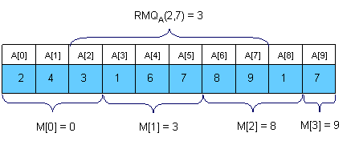
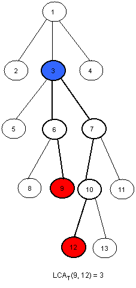
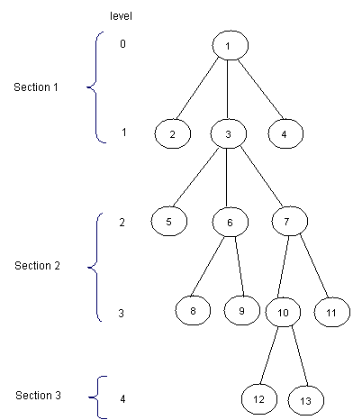
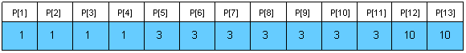
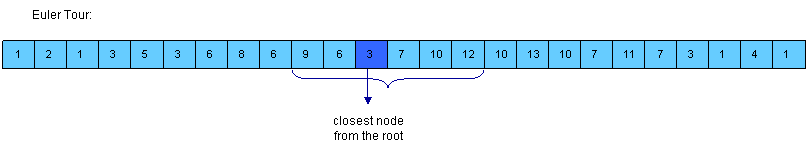
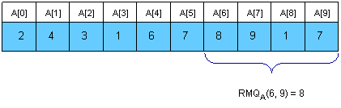
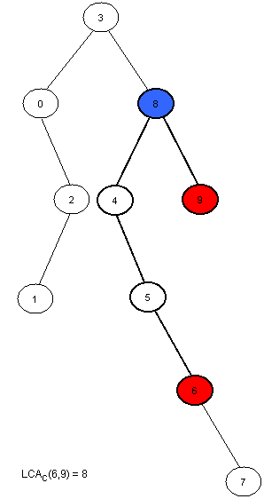

Member Search

|
By danielp
TopCoder Member
Introduction
Notations
Range Minimum Query (RMQ)
Trivial algorithms for RMQ
A <O(N), O(sqrt(N))> solution
Sparse Table (ST) algorithm
Segment Trees
Lowest Common Ancestor (LCA)
A <O(N), O(sqrt(N))> solution
Another easy solution in <O(N logN, O(logN)>
Reduction from LCA to RMQ
From RMQ to LCA
An <O(N), O(1)> algorithm for the restricted RMQ
Conclusion
Introduction
The problem of finding the Lowest Common Ancestor (LCA) of a pair of nodes in a rooted tree has been studied more carefully in the second part of the 20th century and now is fairly basic in algorithmic graph theory. This problem is interesting not only for the tricky algorithms that can be used to solve it, but for its numerous applications in string processing and computational biology, for example, where LCA is used with suffix trees or other tree-like structures. Harel and Tarjan were the first to study this problem more attentively and they showed that after linear preprocessing of the input tree LCA, queries can be answered in constant time. Their work has since been extended, and this tutorial will present many interesting approaches that can be used in other kinds of problems as well.
Let's consider a less abstract example of LCA: the tree of life. It's a well-known fact that the current habitants of Earth evolved from other species. This evolving structure can be represented as a tree, in which nodes represent species, and the sons of some node represent the directly evolved species. Now species with similar characteristics are divided into groups. By finding the LCA of some nodes in this tree we can actually find the common parent of two species, and we can determine that the similar characteristics they share are inherited from that parent.
Range Minimum Query (RMQ) is used on arrays to find the position of an element with the minimum value between two specified indices. We will see later that the LCA problem can be reduced to a restricted version of an RMQ problem, in which consecutive array elements differ by exactly 1.
However, RMQs are not only used with LCA. They have an important role in string preprocessing, where they are used with suffix arrays (a new data structure that supports string searches almost as fast as suffix trees, but uses less memory and less coding effort).
In this tutorial we will first talk about RMQ. We will present many approaches that solve the problem -- some slower but easier to code, and others faster. In the second part we will talk about the strong relation between LCA and RMQ. First we will review two easy approaches for LCA that don't use RMQ; then show that the RMQ and LCA problems are equivalent; and, at the end, we'll look at how the RMQ problem can be reduced to its restricted version, as well as show a fast algorithm for this particular case.
Notations
Suppose that an algorithm has preprocessing time f(n) and query time g(n). The notation for the overall complexity for the algorithm is <f(n), g(n)>.
We will note the position of the element with the minimum value in some array A between indices i and j with RMQA(i, j).
The furthest node from the root that is an ancestor of both u and v in some rooted tree T is LCAT(u, v).
Range Minimum Query(RMQ)
Given an array A[0, N-1] find the position of the element with the minimum value between two given indices.

Trivial algorithms for RMQ
For every pair of indices (i, j) store the value of RMQA(i, j) in a table M[0, N-1][0, N-1]. Trivial computation will lead us to an <O(N3), O(1)> complexity. However, by using an easy dynamic programming approach we can reduce the complexity to <O(N2), O(1)>. The preprocessing function will look something like this:
void process1(int M[MAXN][MAXN], int A[MAXN], int N)
{
int i, j;
for (i =0; i < N; i++)
M[i][i] = i;
for (i = 0; i < N; i++)
for (j = i + 1; j < N; j++)
if (A[M[i][j - 1]] < A[j])
M[i][j] = M[i][j - 1];
else
M[i][j] = j;
}
This trivial algorithm is quite slow and uses O(N2) memory, so it won't work for large cases.
An <O(N), O(sqrt(N))> solution
An interesting idea is to split the vector in sqrt(N) pieces. We will keep in a vector M[0, sqrt(N)-1] the position for the minimum value for each section. M can be easily preprocessed in O(N). Here is an example:

Now let's see how can we compute RMQA(i, j). The idea is to get the overall minimum from the sqrt(N)
sections that lie inside the interval, and from the end and the beginning of the
first and the last sections that intersect the bounds of the interval. To get
RMQA(2,7) in the above example we should compare A[2],
A[M[1]], A[6]
and A[7] and get the position of the minimum value. It's easy to see that this
algorithm doesn't make more than 3 * sqrt(N) operations per query.
The main advantages of this approach are that is to quick to code (a plus for TopCoder-style competitions) and that you can adapt it to the dynamic version of the problem (where you can change the elements of the array between queries).
Sparse Table (ST) algorithm
A better approach is to preprocess RMQ for sub arrays of length 2k using dynamic programming. We will keep an array M[0, N-1][0, logN] where M[i][j] is the index of the minimum value in the sub array starting at i having length 2j. Here is an example:

For computing M[i][j] we must search for the minimum value in the first and second half of the interval. It's obvious that the small pieces have 2j - 1 length, so the recurrence is:

The preprocessing function will look something like this:
void process2(int M[MAXN][LOGMAXN], int A[MAXN], int N)
{
int i, j;
//initialize M for the intervals with length 1
for (i = 0; i < N; i++)
M[i][0] = i;
//compute values from smaller to bigger intervals
for (j = 1; 1 << j <= N; j++)
for (i = 0; i + (1 << j) - 1 < N; i++)
if (A[M[i][j - 1]] < A[M[i + (1 << (j - 1))][j - 1]])
M[i][j] = M[i][j - 1];
else
M[i][j] = M[i + (1 << (j - 1))][j - 1];
}
Once we have these values preprocessed, let's show how we can use them to calculate RMQA(i, j).
The idea is to select two blocks that entirely cover the interval [i..j]
and find the minimum between them. Let k = [log(j - i + 1)]. For computing
RMQA(i, j) we can use the following formula:
So, the overall complexity of the algorithm is <O(N logN), O(1)>.
Segment trees
For solving the RMQ problem we can also use segment trees. A segment tree is a heap-like data structure that can be used for making update/query operations upon array intervals in logarithmical time. We define the segment tree for the interval [i, j] in the following recursive manner:
- the first node will hold the information for the interval [i, j]
- if i<j the left and right son will hold the information for the intervals [i, (i+j)/2] and [(i+j)/2+1, j]

The segment tree has the same structure as a heap, so if we have a node numbered x that is not a leaf the left son of x is 2*x and the right son 2*x+1.
For solving the RMQ problem using segment trees we should use an array M[1, 2 * 2[logN] + 1] where M[i] holds the minimum value position in the interval assigned to node i. At the beginning all elements in M should be -1. The tree should be initialized with the following function (b and e are the bounds of the current interval):
void initialize(intnode, int b, int e, int M[MAXIND], int A[MAXN], int N)
{
if (b == e)
M[node] = b;
else
{
//compute the values in the left and right subtrees
initialize(2 * node, b, (b + e) / 2, M, A, N);
initialize(2 * node + 1, (b + e) / 2 + 1, e, M, A, N);
//search for the minimum value in the first and
//second half of the interval
if (A[M[2 * node]] <= A[M[2 * node + 1]])
M[node] = M[2 * node];
else
M[node] = M[2 * node + 1];
}
}
The function above reflects the way
the tree is constructed. When calculating the minimum position for some interval
we should look at the values of the sons. You should call the function with node
= 1, b = 0 and e = N-1.
We can now start making queries. If we want to find the position of the minimum value in some interval [i, j] we should use the next easy function:
int query(int node, int b, int e, int M[MAXIND], int A[MAXN], int i, int j)
{
int p1, p2;
//if the current interval doesn't intersect
//the query interval return -1
if (i > e || j < b)
return -1;
//if the current interval is included in
//the query interval return M[node]
if (b >= i && e <= j)
return M[node];
//compute the minimum position in the
//left and right part of the interval
p1 = query(2 * node, b, (b + e) / 2, M, A, i, j);
p2 = query(2 * node + 1, (b + e) / 2 + 1, e, M, A, i, j);
//return the position where the overall
//minimum is
if (p1 == -1)
return M[node] = p2;
if (p2 == -1)
return M[node] = p1;
if (A[p1] <= A[p2])
return M[node] = p1;
return M[node] = p2;
}
You should call this function with node = 1, b = 0 and e = N - 1, because the interval assigned to the first node is [0, N-1].
It's easy to see that any query is done in O(log N). Notice that we stop when we reach completely in/out intervals, so our path in the tree should split only one time.
Using segment trees we get an <O(N), O(logN)> algorithm. Segment trees are very powerful, not only because they can be used for RMQ. They are a very flexible data structure, can solve even the dynamic version of RMQ problem, and have numerous applications in range searching problems.
Lowest Common Ancestor (LCA)
Given a rooted tree T and two nodes u and v, find the furthest node from the root that is an ancestor for both u and v. Here is an example (the root of the tree will be node 1 for all examples in this editorial):

An <O(N), O(sqrt(N))> solution
Dividing our input into equal-sized parts proves to be an interesting way to solve the RMQ problem. This method can be adapted for the LCA problem as well. The idea is to split the tree in sqrt(H) parts, were H is the height of the tree. Thus, the first section will contain the levels numbered from 0 to sqrt(H) - 1, the second will contain the levels numbered from sqrt(H) to 2 * sqrt(H) - 1, and so on. Here is how the tree in the example should be divided:

Now, for each node, we should know the ancestor that is situated on the last level of the upper next section. We will preprocess this values in an array P[1, MAXN]. Here is how P should look like for the tree in the example (for simplity, for every node i in the first section let P[i] = 1):

Notice that for the nodes situated on the levels that are the first ones in some sections, P[i] = T[i]. We can preprocess P using a depth first search (T[i] is the father of node i in the tree, nr is [sqrt(H)] and L[i] is the level of the node i):
void dfs(int node, int T[MAXN], int N, int P[MAXN], int L[MAXN], int nr) {
int k;
//if node is situated in the first
//section then P[node] = 1
//if node is situated at the beginning
//of some section then P[node] = T[node]
//if none of those two cases occurs, then
//P[node] = P[T[node]]
if (L[node] < nr)
P[node] = 1;
else
if(!(L[node] % nr))
P[node] = T[node];
else
P[node] = P[T[node]];
for each son k of node
dfs(k, T, N, P, L, nr);
}
Now, we can easily make queries. For finding LCA(x, y) we we will first find in what section it
lays, and then trivially compute it. Here is the code:
int LCA(int T[MAXN], int P[MAXN], int L[MAXN], int x, int y)
{
//as long as the node in the next section of
//x and y is not one common ancestor
//we get the node situated on the smaller
//lever closer
while (P[x] != P[y])
if (L[x] > L[y])
x = P[x];
else
y = P[y];
//now they are in the same section, so we trivially compute the LCA
while (x != y)
if (L[x] > L[y])
x = T[x];
else
y = T[y];
return x;
}
This function
makes at most 2 * sqrt(H) operations. Using this approach we get an <O(N),
O(sqrt(H))> algorithm, where H is the height of the tree. In the worst case
H
= N, so the overall complexity is <O(N), O(sqrt(N))>. The main advantage of
this algorithm is quick coding (an average Division 1 coder shouldn't need more
than 15 minutes to code it).
Another easy solution in <O(N logN, O(logN)>
If we need a faster solution for this problem we could use dynamic programming. First, let's compute a table P[1,N][1,logN] where P[i][j] is the 2j-th ancestor of i. For computing this value we may use the following recursion:
The preprocessing function should look like this:
void process3(int N, int T[MAXN], int P[MAXN][LOGMAXN])
{
int i, j;
//we initialize every element in P with -1
for (i = 0; i < N; i++)
for (j = 0; 1 << j < N; j++)
P[i][j] = -1;
//the first ancestor of every node i is T[i]
for (i = 0; i < N; i++)
P[i][0] = T[i];
//bottom up dynamic programing
for (j = 1; 1 << j < N; j++)
for (i = 0; i < N; i++)
if (P[i][j - 1] != -1)
P[i][j] = P[P[i][j - 1]][j - 1];
}
This takes O(N logN) time and space. Now let's see how we can make queries. Let L[i]
be the level of node i in the tree. We must observe that if p and
q are on the same level in the tree we can compute LCA(p, q) using
a meta-binary search. So, for every power j of 2 (between
log(L[p]) and 0, in descending order), if P[p][j] != P[q][j]
then we know that LCA(p, q) is on a higher level and we will continue
searching for LCA(p = P[p][j], q = P[q][j]). At the end, both p
and q will have the same father, so return T[p]. Let's see what
happens if L[p] != L[q]. Assume, without loss of generality, that L[p]
< L[q]. We can use the same meta-binary search for finding the
ancestor of p situated on the same level with q, and then we can
compute the LCA as described below. Here is how the query function
should look:
int query(int N, int P[MAXN][LOGMAXN], int T[MAXN],
int L[MAXN], int p, int q)
{
int tmp, log, i;
//if p is situated on a higher level than q then we swap them
if (L[p] < L[q])
tmp = p, p = q, q = tmp;
//we compute the value of [log(L[p)]
for (log = 1; 1 << log <= L[p]; log++);
log--;
//we find the ancestor of node p situated on the same level
//with q using the values in P
for (i = log; i >= 0; i--)
if (L[p] - (1 << i) >= L[q])
p = P[p][i];
if (p == q)
return p;
//we compute LCA(p, q) using the values in P
for (i = log; i >= 0; i--)
if (P[p][i] != -1 && P[p][i] != P[q][i])
p = P[p][i], q = P[q][i];
return T[p];
}
Now, we can see that this function makes at most 2 * log(H) operations, where H is the height of the
tree. In the worst case H = N, so the overall complexity of this
algorithm is <O(N logN), O(logN)>. This solution is easy to code too, and
it's faster than the previous one.
Reduction from LCA to RMQ
Now, let's show how we can use RMQ for computing LCA queries. Actually, we will reduce the LCA problem to RMQ in linear time, so every algorithm that solves the RMQ problem will solve the LCA problem too. Let's show how this reduction can be done using an example:


click to enlarge image
click to enlarge image
Notice that LCAT(u, v) is the closest node from the root encountered between the visits of u and v during a depth first search of T. So, we can consider all nodes between any two indices of u and v in the Euler Tour of the tree and then find the node situated on the smallest level between them. For this, we must build three arrays:
- E[1, 2*N-1] - the nodes visited in an Euler Tour of T; E[i] is the label of i-th visited node in the tour
- L[1, 2*N-1] - the levels of the nodes visited in the Euler Tour; L[i] is the level of node E[i]
- H[1, N] - H[i] is the index of the first occurrence of node i in E (any occurrence would be good, so it's not bad if we consider the first one)

click to enlarge image
Notice that consecutive elements in L differ by exactly 1.
From RMQ to LCA
We have shown that the LCA problem can be reduced to RMQ in linear time. Here we will show how we can reduce the RMQ problem to LCA. This means that we actually can reduce the general RMQ to the restricted version of the problem (where consecutive elements in the array differ by exactly 1). For this we should use cartesian trees.
A Cartesian Tree of an array A[0, N - 1] is a binary tree C(A) whose root is a minimum element of A, labeled with the position i of this minimum. The left child of the root is the Cartesian Tree of A[0, i - 1] if i > 0, otherwise there's no child. The right child is defined similary for A[i + 1, N - 1]. Note that the Cartesian Tree is not necessarily unique if A contains equal elements. In this tutorial the first appearance of the minimum value will be used, thus the Cartesian Tree will be unique. It's easy to see now that RMQA(i, j) = LCAC(i, j).
Here is an example:


Now we only have to compute C(A) in linear time. This can be done using a stack. At the beginning the stack is empty. We will then insert the elements of A in the stack. At the i-th step A[i] will be added next to the last element in the stack that has a smaller or equal value to A[i], and all the greater elements will be removed. The element that was in the stack on the position of A[i] before the insertion was done will become the left son of i, and A[i] will become the right son of the smaller element behind him. At every step the first element in the stack is the root of the cartesian tree. It's easier to build the tree if the stack will hold the indexes of the elements, and not their value.
Here is how the stack will look at each step for the example above:
| Step | Stack | Modifications made in the tree |
| 0 | 0 | 0 is the only node in the tree. |
| 1 | 0 1 | 1 is added at the end of the stack. Now, 1 is the right son of 0. |
| 2 | 0 2 | 2 is added next to 0, and 1 is removed (A[2] < A[1]). Now, 2 is the right son of 0 and the left son of 2 is 1. |
| 3 | 3 | A[3] is the smallest element in the vector so far, so all elements in the stack will be removed and 3 will become the root of the tree. The left child of 3 is 0. |
| 4 | 3 4 | 4 is added next to 3, and the right son of 3 is 4. |
| 5 | 3 4 5 | 5 is added next to 4, and the right son of 4 is 5. |
| 6 | 3 4 5 6 | 6 is added next to 5, and the right son of 5 is 6. |
| 7 | 3 4 5 6 7 | 7 is added next to 6, and the right son of 6 is 7. |
| 8 | 3 8 | 8 is added next to 3, and all greater elements are removed. 8 is now the right child of 3 and the left child of 8 is 4. |
| 9 | 3 8 9 | 9 is added next to 8, and the right son of 8 is 9. |
Note that every element in A is only added once and removed at most once, so the complexity of this algorithm is O(N). Here is how the tree-processing function will look:
void computeTree(int A[MAXN], int N, int T[MAXN]) {
int st[MAXN], i, k, top = -1;
//we start with an empty stack
//at step i we insert A[i] in the stack
for (i = 0; i < N; i++)
{
//compute the position of the first element that is
//equal or smaller than A[i]
k = top;
while (k >= 0 && A[st[k]] > A[i])
k--;
//we modify the tree as explained above
if (k != -1)
T[i] = st[k];
if (k < top)
T[st[k + 1]] = i;
//we insert A[i] in the stack and remove
//any bigger elements
st[++k] = i;
top = k;
}
//the first element in the stack is the root of
//the tree, so it has no father
T[st[0]] = -1;
}
An<O(N), O(1)> algorithm for the restricted RMQNow we know that the general RMQ problem can be reduced to the restricted version using LCA. Here, consecutive elements in the array differ by exactly 1. We can use this and give a fast <O(N), O(1)> algorithm. From now we will solve the RMQ problem for an array A[0, N - 1] where |A[i] - A[i + 1]| = 1, i = [1, N - 1]. We transform A in a binary array with N-1 elements, where A[i] = A[i] - A[i + 1]. It's obvious that elements in A can be just +1 or -1. Notice that the old value of A[i] is now the sum of A[1], A[2] .. A[i] plus the old A[0]. However, we won't need the old values from now on.
To solve this restricted version of the problem we need to partition A into blocks of size l = [(log N) / 2]. Let A'[i] be the minimum value for the i-th block in A and B[i] be the position of this minimum value in A. Both A and B are N/l long. Now, we preprocess A' using the ST algorithm described in Section1. This will take O(N/l * log(N/l)) = O(N) time and space. After this preprocessing we can make queries that span over several blocks in O(1). It remains now to show how the in-block queries can be made. Note that the length of a block is l = [(log N) / 2], which is quite small. Also, note that A is a binary array. The total number of binary arrays of size l is 2l=sqrt(N). So, for each binary block of size l we need to lock up in a table P the value for RMQ between every pair of indices. This can be trivially computed in O(sqrt(N)*l2)=O(N) time and space. To index table P, preprocess the type of each block in A and store it in array T[1, N/l]. The block type is a binary number obtained by replacing -1 with 0 and +1 with 1.
Now, to answer RMQA(i, j) we have two cases:
- i and j are in the same block, so we use the value computed in P and T
- i and j are in different blocks, so we compute three values: the minimum from i to the end of i's block using P and T, the minimum of all blocks between i's and j's block using precomputed queries on A' and the minimum from the begining of j's block to j, again using T and P; finally return the position where the overall minimum is using the three values you just computed.
RMQ and LCA are strongly related problems that can be reduced one to another. Many algorithms can be used to solve them, and they can be adapted to other kind of problems as well.
Here are some training problems for segment trees, LCA and RMQ:
SRM 310 -> Floating Median
http://acm.pku.edu.cn/JudgeOnline/problem?id=1986
http://acm.pku.edu.cn/JudgeOnline/problem?id=2374
http://acmicpc-live-archive.uva.es/nuevoportal/data/problem.php?p=2045
http://acm.pku.edu.cn/JudgeOnline/problem?id=2763
http://www.spoj.pl/problems/QTREE2/
http://acm.uva.es/p/v109/10938.html
http://acm.sgu.ru/problem.php?contest=0&problem=155
References
- "Theoretical and Practical Improvements on the RMQ-Problem, with Applications to LCA and LCE" [PDF] by Johannes Fischer and Volker Heunn
- "The LCA Problem Revisited" [PPT] by Michael A.Bender and Martin Farach-Colton - a very good presentation, ideal for quick learning of some LCA and RMQ aproaches
- "Faster algorithms for finding lowest common ancestors in directed acyclic graphs" [PDF] by Artur Czumaj, Miroslav Kowaluk and Andrzej Lingas